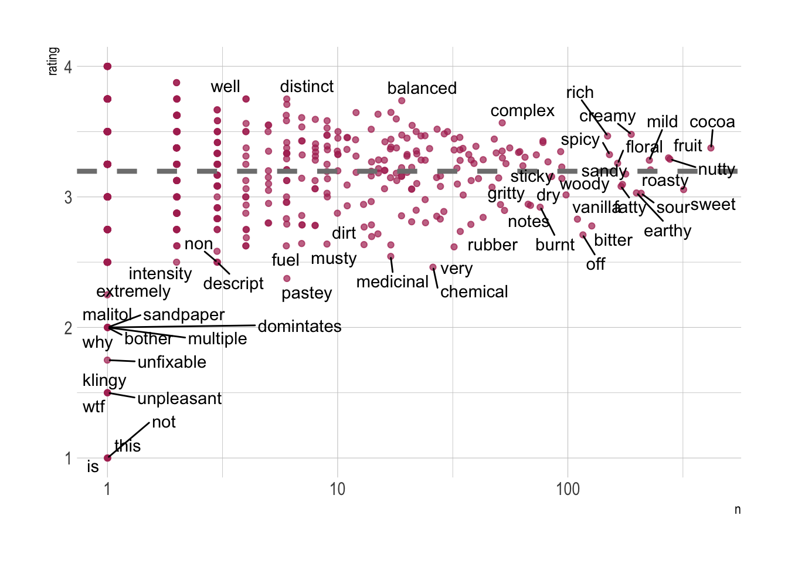
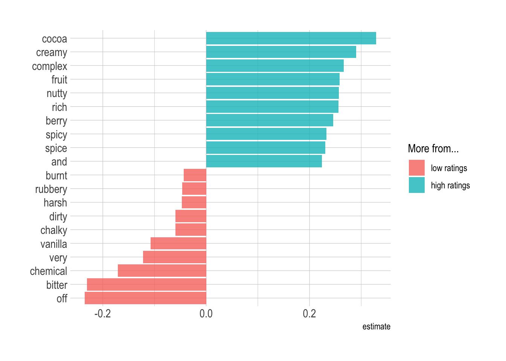

Learning Tidymodels package using the Chocolates dataset from TidyTuesday.
TidyModels
Random Forest
SVM
Machine Learning
Text-analysis
Author
Karat Sidhu
Published
May 22, 2022
TidyModels Text Prediction using Random Forests and SVM
The purpose of this post is for me to learn more about tidymodels package, as well as learning and deploying models for prediction. This is hopefully a first in the series of many posts where I try and learn more about various algorithms that are present in this package.
Chocolate Ratings
The dataset used today will be from the TidyTuesday data1. Since I am almost a complete beginner I will be making use of Julie Silge’s great blogs2 to learn more about how to use and run the models .
Goal
The goal of this first exercise is to learn more about text analysis and using various reviews from chocolates to predict the ratings for a particular chocolate bar.
This is a very vague and non specific way of predicting the outcome but a good starting point in learning how the algorithms work. ## Loading the packages
Rows: 2530 Columns: 10
── Column specification ────────────────────────────────────────────────────────
Delimiter: ","
chr (7): company_manufacturer, company_location, country_of_bean_origin, spe...
dbl (3): ref, review_date, rating
ℹ Use `spec()` to retrieve the full column specification for this data.
ℹ Specify the column types or set `show_col_types = FALSE` to quiet this message.
From the chart above, it looks like that most chocolates are rated somewhere in the range of 2.5 and 3.75 with a few high-rated and low-rated exceptions.
So we’ll be comparing the ratings and the descriptive words used to describe the corresponding ratings.
TidyText words analysis
Lets use the tidytext() library to check what are some of the most common words used to describe the flavor of each chocolate in the data-set.
# split the characteristics column into words using tidytext, and make a new column called word instead of the original.tidy_chocolate <- chocolate %>%unnest_tokens(word, most_memorable_characteristics)tidy_chocolate |>group_by(word) |>summarise(total =n()) |>arrange(desc(total))
# A tibble: 547 × 2
word total
<chr> <int>
1 cocoa 419
2 sweet 318
3 nutty 278
4 fruit 273
5 roasty 228
6 mild 226
7 sour 208
8 earthy 199
9 creamy 189
10 intense 178
# … with 537 more rows
It looks like the usual expected words like cocoa, sweet, nutty etc are the most prevalent.
Since we know what the most common words are, its time to look at how an average chocolate described by these words is rated.
Warning: ggrepel: 495 unlabeled data points (too many overlaps). Consider
increasing max.overlaps

Words like chemical, burnt, medicinal, pastey, bitter etc look to be associated with generally low rated chocolate, while cocoa, complex, creamy, balanced etc are higher rated chocolates.3
We now have a bit of an idea of what the general feeling of the data rating, and we can go on to buiding the models.
Model Building
Building Models with Tidymodels
Let’s start our modeling by setting up our “data budget.” We’ll stratify by our outcome “rating” which is what we want to measure using the tokens.
library(tidymodels)
Time to split the data into training and testing data
We’re done with splitting the data into test and train, and we’re using the training data to train the model. So the first step will involve setting up feature engineering. The data right now is complex and we need to transform it into features that are useful for our model tokenization and computing.
Tokenization
(if that’s a word?)
We’ll use textrecipes package to tokenize “most_memorable_characteristics” wrt “ratings” and look at the 100 most common words used (here they are called tokens).All of this is done on the
library(textrecipes)choco_rec <-recipe(rating ~ most_memorable_characteristics, data = choco_train) %>%step_tokenize(most_memorable_characteristics) %>%step_tokenfilter(most_memorable_characteristics, max_tokens =100) %>%# 100 most common wordsstep_tfidf(most_memorable_characteristics) # step frequeence df# looking at the tokenized dataprep(choco_rec) %>%bake(new_data =NULL)
We are done with making the models and now can evaluate both of them.
Model Evaluation
These workflows have no tuning parameters so we can evaluate them as they are. (Random forest models can be tuned but they tend to work fine with the defaults as long as you have enough trees.)
doParallel::registerDoParallel() # run them in parallelcontrl_preds <-control_resamples(save_pred =TRUE)svm_rs <-fit_resamples( svm_wf,resamples = choco_folds,control = contrl_preds)ranger_rs <-fit_resamples( rf_wf,resamples = choco_folds,control = contrl_preds)
How did these two models compare?
SVM
collect_metrics(svm_rs)
# A tibble: 2 × 6
.metric .estimator mean n std_err .config
<chr> <chr> <dbl> <int> <dbl> <chr>
1 rmse standard 0.347 10 0.00656 Preprocessor1_Model1
2 rsq standard 0.367 10 0.0181 Preprocessor1_Model1
Random Forest
collect_metrics(ranger_rs)
# A tibble: 2 × 6
.metric .estimator mean n std_err .config
<chr> <chr> <dbl> <int> <dbl> <chr>
1 rmse standard 0.350 10 0.00688 Preprocessor1_Model1
2 rsq standard 0.359 10 0.0164 Preprocessor1_Model1
We can visualize these results by comparing the predicted rating with the true rating:
Neither of these prediction models look great, judging by their rsq values and the general prediction. However, we can probably use the SVM model for further analysis since it doesn’t take as long as the RF model. The function last_fit() fits one final time on the training data and evaluates on the testing data.
This is the first time we have used the testing data.
final_fitted <-last_fit(svm_wf, choco_split)collect_metrics(final_fitted) ## metrics evaluated on the *testing* data
# A tibble: 2 × 4
.metric .estimator .estimate .config
<chr> <chr> <dbl> <chr>
1 rmse standard 0.381 Preprocessor1_Model1
2 rsq standard 0.348 Preprocessor1_Model1
Again the results don’t look particularly great, but its just a practise run.
Now the “final_fitted” object can be used to predict the ratings for everything in the testing data.
This is done by using the workflow to predict the choco_test data.
Note: You can save this fitted final_wf object to use later with new data, for example with readr::write_rds().
Rating Bais Visualization
We can now directly visualize the baises for each of the ‘token’ or term and how they affect the rating of a particular chocolate. This is done from the final_fitted object
extract_workflow(final_fitted) %>%tidy() %>%# make a tablefilter(term !="Bias") %>%# remove biasesgroup_by(estimate >0) %>%slice_max(abs(estimate), n =10) %>%ungroup() %>%mutate(term =str_remove(term, "tfidf_most_memorable_characteristics_")) %>%ggplot(aes(estimate, fct_reorder(term, estimate), fill = estimate >0)) +geom_col(alpha =0.8) +scale_fill_discrete(labels =c("low ratings", "high ratings")) +labs(y =NULL, fill ="More from...") + hrbrthemes::theme_ipsum()

We see what we noticed during our EDA, i.e. the words like off, bitter, chemical heavily turn the rating negative/low while words like creamy, cocoa, complex etc. tend to be associated with higher rated chocolates.